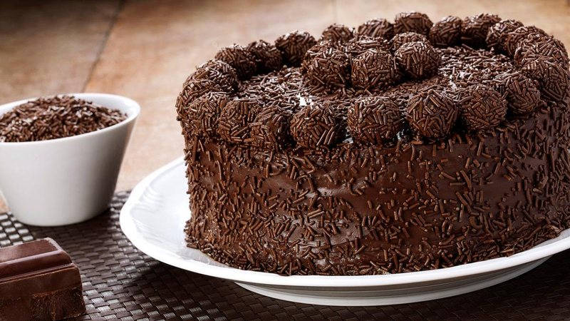

Bolo de Chocolate Simples

Ingredientes
Massa
- 4 ovos
- 1 Xícara de óleo de Soja
- 1 Xícara de Água Morna
- 1 Xícara de Farinha de Trigo
- 1 Xícara de Chocolate em pó ou Cacau 70%
- 1 Colher de Fermento em Pó
Calda
- 8 Colheres de Chocolate em Pó
- 4 Colheres de margarina
- 1 lata de leite condesado
Modo de Preparo
Massa
- Separe as claras das gemas dos ovos.
- Coloque as claras em uma tigela limpa e seca.
- Usando um batedor de claras, uma batedeira elétrica ou um mixer de mão, comece a bater as claras
em velocidade média.
- Continue batendo até que as claras fiquem firmes e formem picos. Isso significa que, quando você
levantar o batedor, as claras devem formar picos que se sustentam, não se desmanchando
imediatamente.
- Com as claras em neve prontas, você pode adicionar delicadamente à massa do bolo. Dobre as
claras nas outras misturas usando uma espátula, movendo de baixo para cima para preservar o
volume e a leveza das claras.
- Com as claras em neve incorporadas à massa, misture delicadamente até que não haja mais traços
visíveis de claras, mas tenha cuidado para não mexer em excesso e perder o volume.
- Retire o bolo do forno e deixe esfriar na forma por alguns minutos antes de desenformar. Em
seguida, deixe o bolo esfriar completamente em uma grade antes de servir.
Calda
- Em uma panela, combine o cacau em pó e o açúcar.
- Adicione a água à mistura na panela.
- Leve a panela ao fogo médio, mexendo constantemente, até a calda começar a ferver.